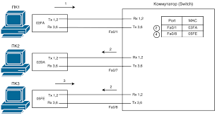

Cisco Switches-ի հետ աշխատելը

Cisco անջատիչ գնելուց հետո, երբ այն դուրս հանեք
տուփեր, միացրեք հոսանքը պատի վարդակից, միացրեք աշխատունակը
կայանը ճիշտ UTP մալուխով և սարքն անմիջապես կաշխատի: Դուք չեք կարող որևէ լրացուցիչ գործողություններ ձեռնարկել, մի մուտքագրել կարգավորումներ և, ավելին, անջատիչին չասել, թե ինչպես ուղարկել Ethemet շրջանակները: Անջատիչի լռելյայն կարգավորումները ենթադրում են, որ սարքի բոլոր միջերեսները միացված են, դա
օգտագործվում են ճիշտ մալուխներ, և ճիշտ սարքերը միացված են անջատիչին, որպեսզի այն կարողանա ուղարկել և ստանալ տվյալների շրջանակներ:
Այնուամենայնիվ, ցանցերի մեծ մասում ադմինիստրատորները ցանկանում են դա անել
ստուգեք անջատիչի կարգավիճակը, դիտեք տեղեկատվությունը այն մասին, թե ինչ է անում սարքը ներկայումս և, հնարավոր է, կարգավորեք որոշ առաջադեմ գործառույթներ: Հաճախ անհրաժեշտ է նաև միացնել անվտանգության որոշ առանձնահատկություններ, որոնք թույլ կտան ցանցային ինժեներներին ապահով կերպով միանալ սարքին և վերահսկել օգտվողի վարքագիծը ցանցում: Ամեն ինչ անելու համար
վերը նշված քայլերով, ցանցի ինժեները պետք է կարողանա միանալ անջատիչի CLI-ին:
Այս գլուխը բացատրում է, թե ինչպես մուտք գործել հրամանի տողի միջերես
Cisco անջատիչների տողեր, որոնք ստուգելու համար օգտագործելու հրամանները
սարքի ընթացիկ աշխատանքը և ինչպես կատարել սարքի հիմնական կարգավորումները: Այս գլխում ուշադրությունը կենտրոնացված է կազմաձևման գործընթացների վրա, այլ ոչ թե հրամանների որևէ կոնկրետ շարքի: Մաս 11-ում ավելի մանրամասն նկարագրված են CLI-ի միջոցով սարքը կարգավորելու տարբեր հրամաններ:
--------------------------------------------------------------------------------------------------------------------------------------------------------------------------------------------------------------------------------------------------------------------------------------------------------------------------------------------------------------------
Մուտք դեպի հրամանի տողի ինտերֆեյս
Cisco Catalyst 2960 անջատիչ տողեր
Ուղղիչներ և Catalyst switch մոդելների մեծ մասը
Cisco-ն օգտագործում է հրամանի տողի ինտերֆեյսի հայեցակարգը (Command-Lipe
I ինտերֆեյս - CLI): CLI-ն տեքստի վրա հիմնված ինտերֆեյս է, որտեղ օգտատերը, սովորաբար ցանցային ինժեները, որոշ հրամաններ է մուտքագրում տեքստի տեսքով: Սեղմելով ստեղնը՝ նման հրամանը փոխանցվում է անջատիչին և ցույց է տալիս սարքին
ինչ պետք է արվի. Անջատիչը կատարում է հրամանում նշված գործողությունը և որոշ դեպքերում թողարկում է հրամանի արդյունք պարունակող տեղեկատվական հաղորդագրություն:
Cisco Catalyst անջատիչները նաև թույլ են տալիս վերահսկել և կարգավորել ինքներդ: Օրինակ, անջատիչը կարող է ապահովել վեբ ինտերֆեյս, որպեսզի ցանցային ինժեները կարողանա օգտագործել վեբ զննարկիչը՝ գործարկվող վեբ սերվեր մուտք գործելու համար
անջատիչի վրա: Անջատիչները կարող են կառավարվել նաև գրքի երկրորդ հատորում քննարկված ցանցի կառավարման ծրագրաշարի միջոցով:
Այս գիրքը քննարկում է միայն ձեռնարկության դասի Cisco Catalyst անջատիչները և ինչպես օգտագործել Cisco CLI-ն դրանք կառավարելու համար: Այս բաժինը սկսվում է Cisco Catalyst անջատիչների ավելի մանրամասն քննարկմամբ, այնուհետև անցնում է այն, թե ինչպես
ցանցի ինժեները կարող է մուտք գործել CLI ինտերֆեյս հրամաններ մուտքագրելու համար: